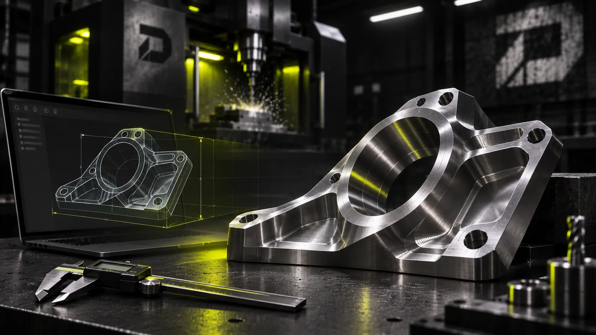

TEGN DET.
FORSTÅ DET.
BYG DET.
CAD og CAM er forbindelsen mellem en idé og et emne, der kan fremstilles. Det handler ikke bare om at tegne noget flot – men om funktion, mål, adgang og materialevalg.
STIL ET SPØRGSMÅL
KONCEPTVISUALISERING · FRA DIGITAL MODEL TIL FYSISK DELCAD ER MERE
END EN MODEL.
En fungerende del kræver de rigtige mål og gennemtænkt sammenhæng med resten af konstruktionen.
FORSTÅ FUNKTIONEN
Hvad skal holde, bevæge sig, passe sammen eller modstå belastning? Funktion før form.
BYG GEOMETRIEN
En 3D-model giver mulighed for at afklare dimensioner, montage, adgang og flere versioner af løsningen.
GØR DEN FREMSTILLELIG
Det, der fungerer digitalt, skal også kunne fastspændes og bearbejdes. Hjørner, tynde vægge og dybe lommer vurderes.
AFPRØV OG TILPAS
En fysisk prototype kan afsløre, hvor der er behov for justering, inden en eventuel ny version.
FRA MODEL
TIL MASKINE.
CAM bruges til at forberede CNC-bearbejdning: værktøj, operationsrækkefølge, bearbejdningsstrategi og simulering.
Hvordan vender emnet i maskinen? Hvor ligger nulpunktet? Hvordan holdes det fast?
Værktøjets diameter og geometri skal passe til materialet og detaljer i delen.
Grovbearbejdning, finbearbejdning, boring og andre operationer lægges i en fornuftig rækkefølge.
Værktøjsbaner kontrolleres digitalt, men fysisk opsætning, værktøj og emne skal stadig verificeres ved maskinen.
IKKE EN TEGNER?
INTET PROBLEM.
Jo flere oplysninger, jo lettere at vurdere. Men det er ikke et krav at kunne konstruere selv.
EN HÅNDSKITSE
Vis proportioner, omtrentlige mål og hvad der skal passe sammen.
ET FOTO
Gerne med målestok eller målangivelse, hvis noget skal erstattes eller tilpasses.
EN 3D-MODEL
STEP og andre CAD-formater kan være gode udgangspunkter. Filen vurderes før videre arbejde.
EN BESKRIVELSE
Hvad skal emnet løse? Hvor skal det sidde? Hvad er problemet med standarddele?
SPØRGSMÅL
OM CAD/CAM.
Skal jeg betale for en tegning først?
Ikke nødvendigvis. Beskriv først opgaven. Om der er behov for opmåling eller CAD-arbejde afklares ved vurderingen.
Kan en tegning gøres klar til CNC?
Ofte kræver en model tilpasning med hensyn til værktøjsadgang, fastspænding og detaljer. Det vurderes konkret.
Er 3D-print og CNC det samme?
Nej. 3D-print bygger materiale op, mens CNC-bearbejdning fjerner materiale. Valget afhænger af form, funktion, materialekrav og økonomi.
Kan Datum hjælpe med flere designversioner?
Iteration og prototypeafprøvning er en del af den langsigtede retning. Det konkrete omfang aftales fra opgave til opgave.
GÅR DU MED
EN IDÉ?
Beskriv funktionen. En skitse eller en løs tanke er et godt udgangspunkt for en samtale.